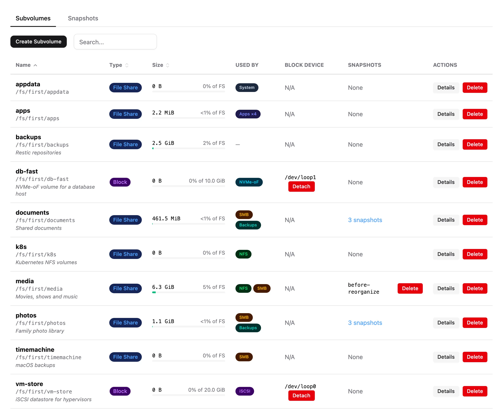

Storage
Everything bcachefs can do, one click away
Compression, checksumming, erasure coding, tiering, encryption and O(1) snapshots. Create filesystem or block subvolumes with their own quotas, compression and tiering, and see at a glance which shares, apps and backups use each one.
- Instant snapshots, writable clones and whole-subvolume rollback
- Lock and unlock encrypted filesystems, with optional TPM2 auto-unlock
- Scrubs, device evacuation and reconcile with live progress
